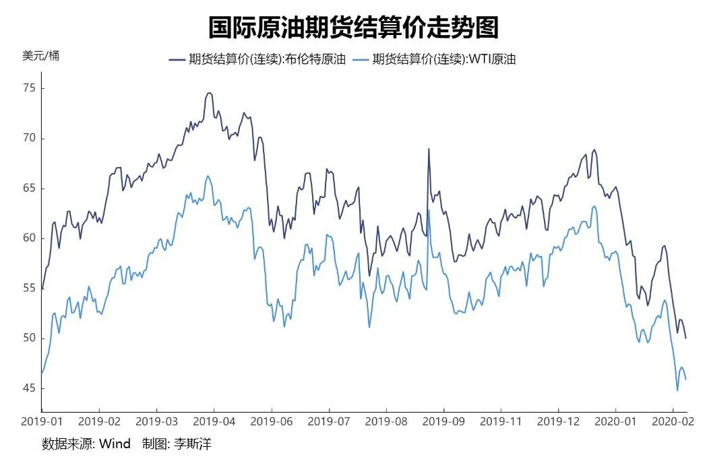
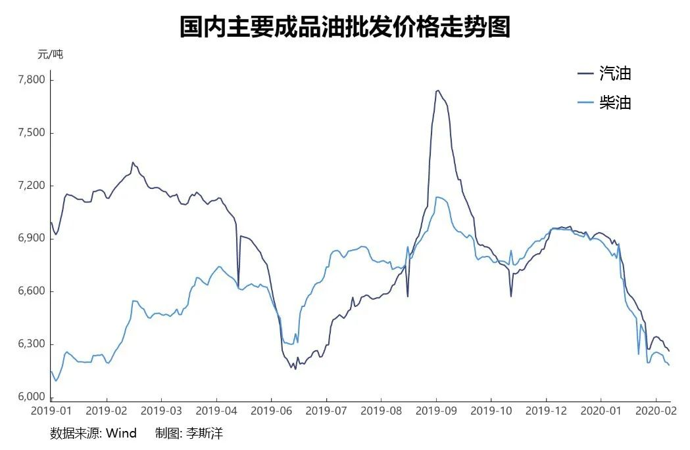
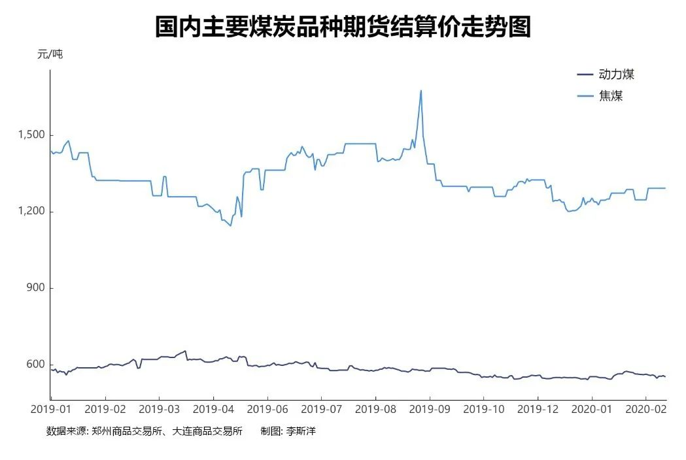
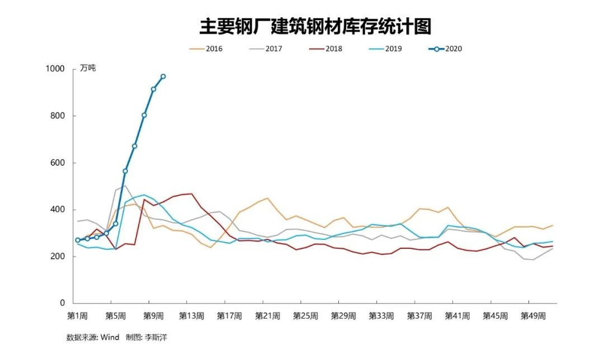
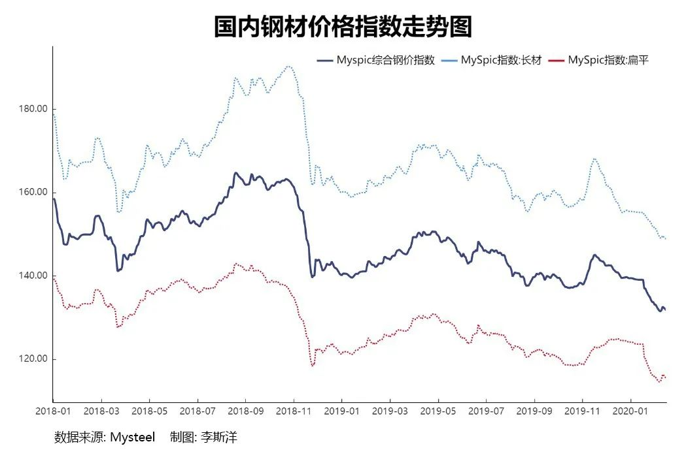

病毒对石油煤炭有色冲击巨大，钢铁却比往年更红火
原文链接 备份链接 虽然受疫情影响巨大，但大宗原材料行业普遍预计疫情结束后的需求反弹将带动行业回暖 ****************************李斯洋 | 文**************************** …

虽然受疫情影响巨大，但大宗原材料行业普遍预计疫情结束后的需求反弹将带动行业回暖

图/视觉中国
文 |《财经》记者 李斯洋
编辑 | 马克
新冠疫情给油气、煤炭、钢铁、有色金属等这些关乎国民经济命脉的大宗原材料价格造成巨大波动，也给与之紧密相关的能源、电力、冶金、化工等周期性行业蒙上阴影。
疫情至今，国际原油期货价格创下五年来最大周跌幅；国际铜期货价格也在疫情伊始时连续下跌，创下六年来持续时间最长的连降期；彭博大宗商品总回报指数（Bloomberg Commodity Total Return Index）也创下去年8月以来的最低收盘点位。
疫情打乱了国内大宗原材料行业的生产节奏。晋陕蒙煤炭主产区2月初的复产率普遍不及50%，煤炭供应萎缩的压力向下游焦化行业和电力行业传导。而下游需求的急剧萎缩和交通运输的不畅，又使成品油和硫酸胀库、钢料钢材爆仓，倒逼化工行业和冶金行业压减产量。
供需双双走弱使得大宗工业原材料价格成了最捉摸不定的因素，现金流危机率先在那些高负债的中小型企业身上出现。
为支持企业应对危机，2月1日，央行、财政部、银保监会、证监会、外汇局五部委联合发布《关于进一步强化金融支持防控新型冠状病毒感染肺炎疫情的通知》。2月3日，中国人民银行宣布将通过元公开市场逆回购操作投放1.2万亿元资金，确保流动性充足供应，银行体系整体流动性比去年同期多9000亿元。
2月12日中共中央政治局召开会议，强调把新冠肺炎疫情影响降到最低，保持经济平稳运行和社会和谐稳定。截至3月1日，已有13个省（市、区）公布2020年重点项目投资计划清单，其中8个省份的年度投资额共计2.8万亿元，基建投资占比最大。
展望未来，行业普遍预计货币政策会转向相对宽松，财政政策也将更加积极，这是大宗原材料行业可以期待的“春天”。
石油：库存高企，价格走低

作为“工业的血液”，石油是国际化程度非常高的大宗商品。2019年中国全年原油进口量超过5亿吨，石油消费量达6.9亿吨，占全球总消费量14.5%，中国的石油对外依存度升至72%。突如其来的新冠疫情，给这个世界第一大原油进口国和世界第二大石油消费国带来巨大冲击。
疫情爆发以来，布伦特原油从1月20日65.98美元/桶跌至2月28日49.92美元/桶。WIT原油从1月20日59.35美元/桶跌至2月28日45.27美元/桶，并创下11年来最大单周跌幅。截至3月5日收盘，布伦特原油跌2.60%，报50.16美元/桶；WTI原油跌2.52%，报46.00美元/桶。

国际各大能源或咨询机构均对疫情“黑天鹅”冲击下的国际油价抱以悲观态度。国际能源署2月最新出版的《石油市场报告》中认为，2020年全球石油消费仅增长82.5万桶/日，比年初的日增幅预测下调36.5万桶/日，是2011年以来最低的增长速度。
据国际知名能源咨询公司埃士信华迈（IHS）预测，今年一季度全球石油消费的同比增量将由此前预计的60万桶/日降为-50万桶/日左右，上一次负增长出现在2008年全球金融危机。国际能源署预测，2020年一季度全球石油消费量年化计算后将下降43.5万桶/日，是10多年来第一次全球性的石油消费下滑。
近年来，持续走弱的国际油价很大程度上依赖中国市场的支撑，石油输出国组织（OPEC）多次组织成员国联合减产来提振油价，但都被增产势头强劲的美国、俄罗斯拉低。“OPEC的减产追赶不上非OPEC国家的增产，使得2020年全球石油市场的供应过剩局面更加严重，而新冠疫情的爆发，又让供需缺口拉得更大。”中石油国际部综合处处长陆如泉告诉《财经》记者。
随着疫情向全世界蔓延，日本、韩国等石油进口大国纷纷出现疫情恶化趋势，对石油需求的打击面将进一步扩大，反映在油价上就是自2月20日以来的连续暴跌。由于伊朗疫情严重，全球最大产油区中东未来局面也不确定，伊朗的石油出口在美国制裁之下已经很少，但其疫情若蔓延到其他产油国，对供应端就会产生重大影响。
对国内产业链来说，国际原油价格波动影响最为直接的是石油炼化行业。“从历史上看，国际原油价格下跌对国内炼厂是利好。但这一次疫情是‘双跌’，不仅原油跌，成品油也大幅跳水。”陆如泉说。

疫情使得占成品油消费总量60%~70%的交通运输业遭受重创。根据交通运输部数据显示，今年春运40天（1月10日~2月18日）全国铁路、公路、水路、民航共发送旅客14.8亿人次，比去年同期下降50.3%。受此影响，预计今年前两月的成品油消费量同比下滑近三成。陆如泉认为，即便疫情从3月起得到有效控制，石油消费量也难以迅速恢复。
由于销路不畅，多数成品油库存处在中高位。国家能源局2月21日披露的数据显示，国内成品油库存高达2110万吨，接近“三桶油”（中石油、中石化、中海油）的库容上限。隆众数据显示，截至1月30日，山东省地方炼厂样本企业汽油库存52.71%（库存占库容的比），柴油库存50.03%，汽柴油库存均超过2019年以来的40%警戒库存。
“按目前‘三桶油’的成品油库存，在中国不加工一滴原油的情况下，仍然能满足国内一个月的成品油需求；如果按疫情期间的消费情况，满足两个月都不成问题。”海通期货能源化工研发负责人杨安告诉《财经》记者。
高库存不仅使得炼厂被迫压减产量，也大幅侵蚀炼厂的效益。中石化和中石油已分别计划将其2月份目标原油加工量压缩80万桶/日和30万桶/日；“地炼企业可能压产100万桶/日，仅30%~40%的开工率已降至五年来的最低位，中小企业的日子将更加难熬。”杨安说。
国家和地方的财税和金融单位已陆续出台相关优惠措施缓解中小企业的现金流压力。除了央行注入流动性外，占全国地炼产能65%的山东省也出台了金融、税费等方面的支持政策。上海期货交易所（下称“上期所”）也提高了原油期货的套期保值审批效率，交易数据显示，疫情带来的原油价格波动增加了企业风险对冲需求，原油期货持仓规模呈快速放大趋势，截至3月5日收盘，持仓量达到81144手，创历史新高。
疫情结束后，需求释放叠加政府对基建、旧改等领域的经济刺激政策，石油的行情有望走强。现阶段考虑到国际油价行情和疫情期间为企业纾困的要求，国家发改委于2月4日和18日两次下调成品油价格。成品油贸易商也在加大买入和囤货的力度，社会库存飙升。“据我们的调研，贸易商对成品油未来价格反弹普遍充满信心。”杨安说。
陆如泉认为，国际油价的走低意味着全球油气供需宽松局面的持续，中国能源安全的紧张局面将得到进一步缓解。
“还有一个必须考虑的问题是，根据中美1月15日达成的第一阶段经济贸易协议，中国今明两年将在2017年基础上扩大进口美国能源产品524亿美元。”陆如泉认为，突如其来的疫情降低了我国的油气需求，变相增加了从美国进口能源产品的难度，意味着我们的履约难度在增加。“相比于俄罗斯和卡塔尔，美国的能源产品并没有价格优势。”
煤炭：产能基本恢复

2020年春节较早，大部分煤矿于1月20日前后开始放假，仅部分国有大矿维持正常生产，主要承担保供应任务。但疫情的突然降临，使原定于初六、初七的煤矿和洗选厂的复工时间一延再延。
“煤矿主要是人手不足的问题，原来每天三班倒，现在多数都是两班甚至单班。” 汾渭能源副总经理曾浩告诉《财经》记者，因为井下的工作环境比较封闭，生产人员相对集中，新冠病毒的传播风险更大。
中国煤炭资源网数据显示，陕西榆林2月初的复工煤矿产能仅占其总产能的40%，中旬复产占比回升到43%；内蒙古鄂尔多斯2月初复产煤矿仅占其总产能的36%，2月25日复产占比回升到58%；而山西复工复产情况相对较好，以同煤集团为例，2月初复工生产矿井30座，2月26日达到51座，基本恢复到2019年同期水平。
各地公路封路限行，汽运短倒（即把货料从仓库运到车皮，或把货料从车皮运到仓库）受阻，使各大运煤铁路都出现运量不足的局面。环渤海港口煤炭调进一度低位运行，2月6日秦皇岛港库存降至390万吨，创2016年“供给侧改革”以来最低水平。截至2月28日秦港存煤量为569万吨，已超过年初水平。

作为我国的能源“压舱石”，煤炭的供应和市场稳定关乎国计民生，国家和地方政府纷纷出台煤炭保供政策。
2月1日，国家煤矿安监局公布《关于切实做好春节后煤矿复工复产工作有关事项的通知》，要求煤矿“安全生产没把握不复产、疫情防控没把握不复产”，对实际到岗职工较少的煤矿要求“必须减少产量，减少进尺安排，减少开工头面”。同一天，国家能源局综合司发布《关于做好疫情防控期间煤炭供应保障有关工作》的通知，要求有序释放煤炭优质先进产能，确保疫情防控期间煤炭市场平稳运行。2月5日，国家发改委、国家能源局召开应对疫情能源供应保障电视电话会议，对保供工作进行再动员再部署。
国家能源局煤炭司司长鲁俊岭2月23日在国务院联防联控机制新闻发布会上介绍，截至2月22日，全国在产煤矿产能31.7亿吨，产能复产率达到76.5%，当日产量833万吨。“疫情对煤炭产量带来的不利影响目前已经基本消除，复产率达到了往年同期水平。”
疫情同样冲击煤炭的下游产业，动力煤需求集中的电力行业、炼焦煤需求集中的焦化行业均大幅走弱。
对于电力行业，动力煤供应紧张的同时，疫情使下游的用电量也大幅收缩。春节假期至2月7日，六大发电集团日均耗煤量从52万吨减少至37万吨，尽管2月16日到21日日耗从38.2万吨回升到42.13万吨，但也仅为去年农历（考虑春节的影响）同期的60%左右。
为支持下游企业复工复产，2月22日国家发改委印发通知，要求自2月1日至6月30日，降低除高耗能行业用户外的其他企业用户用电价格5%，实施支持性两部制电价政策。国家电网和南方电网随后出台多项措施，总计将减免约595亿元电费。
“下游工业企业复工尚处启动阶段，加上气温不断回暖，负荷持续低位运行，电煤库存相对充足。”中国电力企业联合会专家叶春告诉《财经》记者。从国家能源局2月23日披露的信息来看，2月上中旬全国日均发用电量143亿千瓦时，最大负荷约6.9亿千瓦，发电装机充足，电煤供应稳定，能够保障疫情防控和复工复产需要。
对于焦化行业，焦煤供应紧张的同时，复工延迟和物流不畅压低焦化厂的开工率，山西、河北等焦化厂限产比例普遍在30%左右，部分焦化厂限产比例达50%~ 60%。曾浩认为，随着疫情出现拐点，叠加国家“稳预期”“稳增长”的政策刺激，下游钢铁企业的焦炭需求有望强势增长。
钢铁：生产火爆超往年
与其他行业普遍“熄火”不同，疫情期间，钢铁行业的生产活跃度甚至超过了往年同期。
“我的钢铁网”（Mysteel）数据显示，五大钢铁品种（螺纹钢、线材、冷轧板卷、热轧板卷、中厚板）的钢厂库存和社会库存连续12周增加，3月5日已经达到创纪录的3880万吨。每天还有约200万吨钢源源不断生产出来，而下游需求锐减和物流不畅，使钢厂库存超过极限。

面对仓库里一堆再堆的钢料和钢材，密切跟踪市场动向的“我的钢铁网”咨询总监徐向春向《财经》记者表示担忧：“这么大的库存积压，如果销售不出去，未来价格走低，钢厂将难以回笼资金。”
钢厂最大的两个下游市场——建筑业和制造业受疫情影响严重。工信部2月24日披露，目前中小企业目前开工率接近30%。春节返程工人无法复工、钢材物流不畅，导致需求迟迟不能释放。
反观钢铁生产端，是一副热火朝天的景象。中国钢铁工业协会（下称“中钢协”）2月22日披露，截至2月21日，中钢协会员企业开工率为96%。因为原材料补库充足，以及职工出勤数相对稳定，钢厂特别是长流程钢厂在春节和疫情期间仍然正常生产。
疫情期铁矿石港口日均疏港量持续稳定，充分反映了国内钢厂的生产韧性。据Mysteel数据显示，截至2月21日铁矿石港口日均疏港量为283万吨，仅仅比去年同期下降3%。铁矿石生产商力拓（RIO）向《财经》表示，疫情对力拓的业务目前尚未造成重大影响。另一大铁矿石生产商必和必拓（BHP）告诉《财经》，若疫情在一季度能够得到有效控制，且建筑业和制造业等下游增速能在年内恢复至正常运行水平之上，预计2020年中国钢铁行业需求将实现约2.5%的增长。
春节假期后“谜”一般笼罩华北平原的的重污染天气，给人以最直观的感受。华北集中着全球最多的钢铁生产线，据生态环境部卫星环境应用中心的工业热监测数据，华北地区“2+26”城市群春节以来钢厂的生产活跃度大大超去年同期。
究其背景，今年开年以来地方专项债额度有望扩容至3万亿，给基建、老旧小区改造等用钢大户带来重大利好。《财经》记者梳理发现，今年1月各省（市/区）披露的专项债发行规模超5375亿元，比去年1月增加近3.8倍，其中与基建和旧改相关的金额大幅升至70%。
上海泽铁咨询CEO李志斌告诉《财经》，如果按行业内1亿投资对应3300吨钢需求的说法，这一波基建投资将至少带来2%的钢产量同比增长，“但这仅是疫情爆发前的预测。”
为控制可能带来的产能飙升，1月23日，国家发改委、工信部发布《关于完善钢铁产能置换和项目备案工作的通知》紧急叫停了钢铁产能置换和项目备案，以遏制置换过程中通过“数字游戏”变相扩大产能的行为。
“钢厂这几年效益很好，对未来信心很足，认为疫情对下游需求的冲击是暂时的，需求未来会迎来集中式的爆发。”徐向春表示，虽然近几周的产量环比有所下降，但降幅不大，主要是焦炭供应不畅所致，钢厂主动限产的意愿并不强。
尽管未来的“春天”可期，但熬过眼下这个“寒冬”才是头等大事。
“巨大的钢厂库存积压将使钢价不再坚挺。”南钢首席期现货分析师蔡拥政告诉《财经》记者，一面是焦炭等原料供应紧张，价格高位，一面是钢材的库存高，价格低位，整个2月份钢企将面临负向剪刀差，部分钢企必然出现现金流问题。
目前，高库存带来的钢价下跌对钢厂现金流的挤压已经显现。Mysteel数据显示，2月28日钢材现货综合成交价跌至3700元/吨，同比下降8%，创2017年6月以来新低；上期所2月28日螺纹钢期货主力合约rb2005也连续下滑，收3335元/吨。据中钢协统计，中国钢材价格指数（CSPI）2月17日~21日仅为100.55点，低于2019年的最低水平104.28点。

如果算上矿煤焦成本，钢厂2月份仅能维持略高于成本线运行。“北方有不少钢厂因为债务负担重，为了保现金流，不得不以成本价至亏损的价格与下游客户签单。”徐向春说。
疫情发展情况、下游需求释放量能否达到预期仍是市场最关注的问题。2月22日中钢协副会长骆铁军在发布会上称，在实现全面小康和稳增长等一系列政策的支撑下，预计钢材需求将从二季度起快速回升。中钢协还呼吁钢铁企业应把握好生产节奏，主动采取减产、限产措施。
宏观层面上，央行一系列举措注入流动性的举措也在协助钢铁企业度过难关。钢厂也在通过衍生品手段对冲价格风险，期货市场的活跃度显著提升。蔡拥政建议，钢企来此时不宜做卖出保值，应该考虑远期原料成本上涨风险，对矿煤焦做买入保值，或适当考虑一些期权组合策略对冲价格波动风险。
有色：硫酸“胀库”是最大威胁
中国是有色金属最大需求国，疫情爆发后，伦敦金属交易所（LME）铜期货连续10个交易日（1月20日~31日）下跌，跌幅达11.2%，为六年来持续时间最长的连降期；2月28日收跌5588.5。其他有色金属1月24日~31日也创各自下跌纪录并持续走低至今，如期锌下跌5.6%，期铝下跌3.1%，期铅下跌3.0%，期锡下跌2.4%，期镍下跌1.4%。

春节后国内市场跟进补跌，据上期所交易数据显示，2月上旬铜、铝、铅、锌价格比1月下旬分别下跌6.0%、4.2%、5.6%、3.9%。2月中、下旬国内外市场主要有色金属价格持续在低位运行。
首当其冲的就是铜产业链。由于铜的金融属性很强，市场情绪波动在铜身上的反应更加剧烈。铜也是国际化程度很高的大宗商品品种，中国的铜精矿90%依赖进口。
与钢厂类似，铜冶炼厂春节期间一般不会停车，故1月份对冶炼厂影响更多的是季节性因素。一位大型有色冶炼企业的市场负责人告诉《财经》记者，疫情带来的冲击更多体现在2月，由于下游的铜加工和终端制造业未能及时复工复产，物流运输渠道不通畅，推高库存并拉低铜价。
下游需求萎缩，带来的最大威胁是副产硫酸的严重“胀库”。硫酸是铜铅锌冶炼流程中的一个重要副产品，属危险化学品，一旦不能及时被下游产业消纳，冶炼厂库容能力不足将导致被迫压产甚至停工。
而新冠疫情中心湖北省恰恰是我国硫酸的生产消费大省，产能约1700万吨，占全国产能的13.5%。受疫情影响，硫酸行业整体开工率下降，尤其湖北省内企业下降幅度较大。中国硫酸工业协会调研显示，湖北境内的祥云、鄂中、东圣、中东、大峪口等企业目前处于停产状态，新洋丰、三宁、泽东开工率下调至50%，湖北宜化开工率保持在80%的水平。
硫酸行业本就是产能过剩的行业，在疫情之前，行业总体开工率大约在73%左右。“副产硫酸销售基本处在成本线以下，很多冶炼厂的副产硫酸到厂价0元/吨也无法消纳。”安泰科铜研究首席分析师何笑辉告诉《财经》记者。
国内冶炼厂的原材料铜精矿依赖从智利进口，其现货价格按照LME铜期货基准价扣除加工费（TC/RC，铜精矿转化为精铜的总费用）计算得到，TC/RC依据买卖双方的协议定价，今年谈在62美元/吨。2019年智利大罢工使得铜精矿供应偏紧，持续走低的TC/RC价格推升了国内冶炼厂的原料成本。数据显示，2019年底多家铜冶炼厂出现亏损。
为扭转亏损局面，2019年12月26日，中国铜原料谈判小组（CSPT）在福州召开会议号召冶炼企业在2020年联合减产。但业内人士向《财经》分析，由于偏低的产能利用率威胁流动性资金流和贷款，各个企业能够承受的底线不一致，联合减产的效果未必理想。
疫情“黑天鹅”的突然出现，客观上“成全”了CSPT的联合减产计划，LME期铜价格下跌带动铜精矿进口价格下滑。“但这种猛烈的被动减产并没有组织性和计划性，会对冶炼企业的现金流带来很多意想不到的问题。”何笑辉说。
国际铜矿山供应商也在密切关注中国的行情。智利国家铜业公司（Cochilco）表示，将在3月提供有关疫情对智利铜出口影响的首批数据。Cochilco公共政策负责人Jorge Cantallopts称，将于3月10日左右评估2月份智利矿业出口数据，以了解对当地产业的影响。
另一大铜生产商的必和必拓（BHP）向《财经》表示，如果终端市场活动能够在4月恢复正常水平，预测2020年中国精炼铜需求增幅将为1.5%左右。若排除疫情影响的因素，基于矿山供应的平均干扰率，我们对铜市场基本面的预估为铜价将保持在6000~6500美元/吨的区间。
疫情给了看涨期铜的投资者巨大打击，截至3月5日收盘，LME铜期货市场价跌至5670.5美元/吨。就在疫情爆发前，LME期铜合约的净多头仓位创下至少两年来的最高水平，部分原因是中美贸易战的阶段性达成一致和中国基建投资政策的明朗化。不过，疫情结束后市场回暖势头仍被一部分投资者看好，“国内的一些铜冶炼企业也认为，行业的回暖会随着疫情落幕而到来。”何笑辉说。


▲点击图片查看更多疫情报道
责编 | 蒋丽 lijiang@caijing.com.cn
本文为《财经》杂志原创文章，未经授权不得转载或建立镜像。如需转载，请在文末留言申请并获取授权。
原文链接 备份链接 虽然受疫情影响巨大，但大宗原材料行业普遍预计疫情结束后的需求反弹将带动行业回暖 ****************************李斯洋 | 文**************************** …
原文链接 备份链接 _ 随着2月10日全国陆续复工，需要在需求和供给端采取必要调控手段，避免发生更严重的口罩紧缺问题 _ 文 | 笪兴 董博琳 许加凤 为了缓解武汉及整个湖北的医疗物资短缺，各级政府、慈善机构和爱心人士正努力从全中国甚至全 …
原文链接 备份链接 《创新经济战疫计划》，是燃财经在新型肺炎疫情期间推出的特别栏目，关注创新经济企业遇到的新难题、商讨应该采取的新对策，希望能够帮助中小企业一起战胜挑战、把握机会。 作者 | 苏琦 编辑 | 魏佳 新冠疫情爆发以来，和“ …
原文链接 备份链接 国内非武汉地区本地新增病例首次实现零新增，局面完全可控。韩国疫情得到初步控制；欧盟27国全部染疫；意大利扩大限流举措。 文 |《财经》数据研究员徐进 图 |《财经》视觉中心 编辑 | 郝洲 一、国内形势盼巩固，境外输 …
原文链接 备份链接 我们需要从2008年全球金融风暴后4万亿刺激计划的经验教训中，思考在疫情之后中国经济刺激计划和政策重点究竟应放在哪里，哪些方面大有可为，哪些方面要有所克制 图/视觉中国 文 | 郑志刚 面对2020年冬春之交新冠疫情对 …